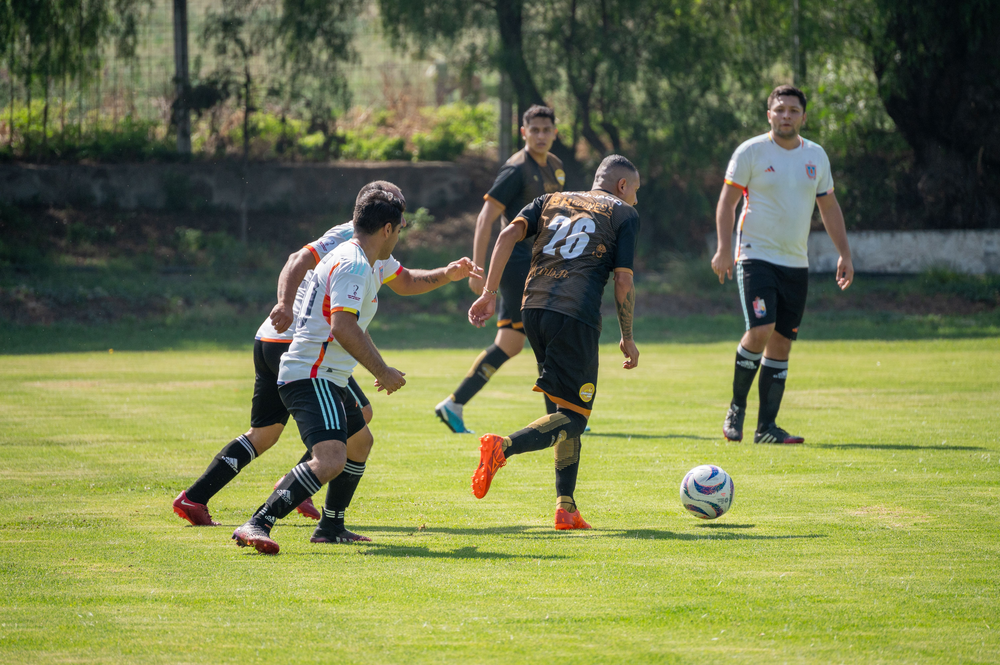
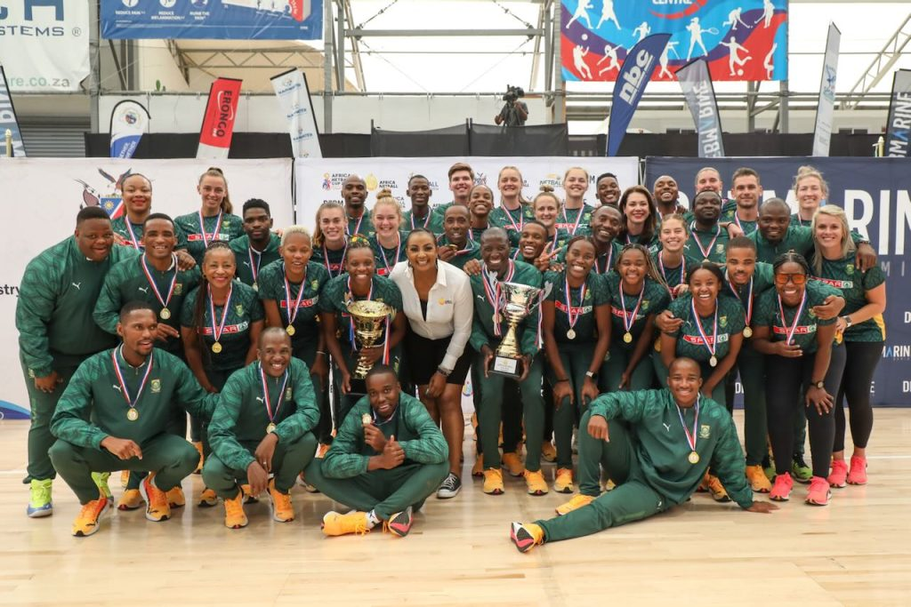
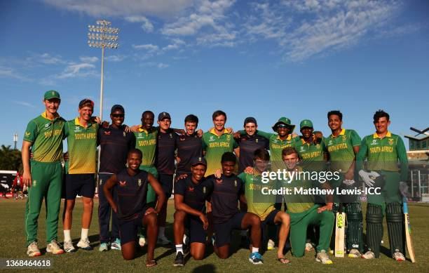
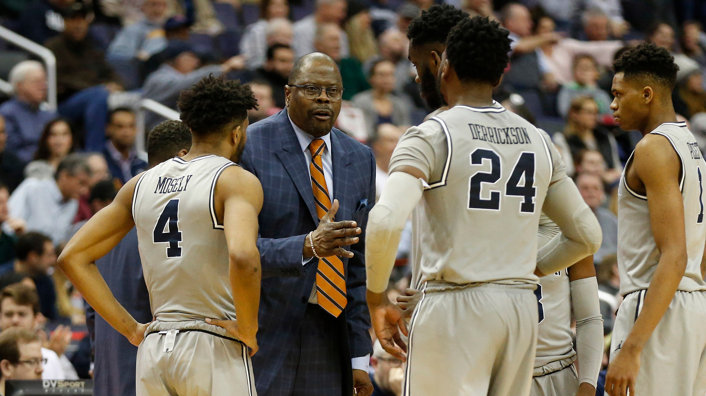

Soccer
Soccer gives members an opportunity to participate in a team sport while developing fitness, coordination, communication and teamwork.
Discover the sporting activities and opportunities available through Glen Austin Sports Club.
Glen Austin Sports Club encourages participation, teamwork, fitness and skill development through a range of sporting activities.
Members can take part in different sporting activities depending on their interests and goals. Our sports programme is designed to encourage both participation and a positive community environment.

Soccer gives members an opportunity to participate in a team sport while developing fitness, coordination, communication and teamwork.

Netball encourages teamwork, movement and communication while helping players develop their passing, shooting and defensive skills.

Cricket provides opportunities to develop batting, bowling, fielding and teamwork skills while enjoying competitive and recreational sporting activities.

Basketball promotes fitness, coordination, quick decision-making and teamwork through active gameplay and training.

Athletics provides opportunities to improve speed, endurance, strength and overall physical fitness through different sporting disciplines.
In addition to sporting activities, the club aims to support members through a range of community-focused services and opportunities.
Members can participate in organised training activities designed to improve sporting skills, fitness and confidence.
Sporting activities provide opportunities for members of the community to meet, participate and develop positive relationships.
The club can support sporting events and activities that encourage participation, teamwork and healthy competition.
Training sessions and sporting fixtures provide members with opportunities to practise their skills and participate in organised activities.
Fixture dates, venues and opponents should be confirmed with the club before being published as official information.
Ask About FixturesBecome part of the Glen Austin Sports Club community and find a sporting activity that suits you.
Join Us